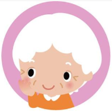

<!--
  Generated template for the BpPage page.

  See http://ionicframework.com/docs/components/#navigation for more info on
  Ionic pages and navigation.
-->
<ion-header>

  <ion-navbar>
    <ion-title>血压</ion-title>
  </ion-navbar>

</ion-header>


<ion-content>

  <ion-scroll  scrollX="true"  style="height: 115px; border:1px solid #ddd;border-style: none none solid none; ">

    <div style="width:1000px;padding-top: 15px;padding-left: 15px;">

      <div style="display:inline-block; margin-right: 25px;">
        <button  style="border-radius: 35px;background-color: white;"  [class]="btnStyle[0]" (click)="getPatientInfo(0)">
          </button>
        <div style="font-size:14px;text-align: center; margin-top: 5px;">爷爷</div>
      </div>

      <div style="display:inline-block;margin-right: 25px;">
        <button  style="border-radius: 35px;background-color: white;"  [class]="btnStyle[1]" (click)="getPatientInfo(1)">
          </button>
        <div style="font-size:14px;text-align: center; margin-top: 5px;">奶奶</div>
      </div>

    </div>


  </ion-scroll>

  <div style="width:75%;">
    <canvas  #chartBar ></canvas>
  </div>
</ion-content>
